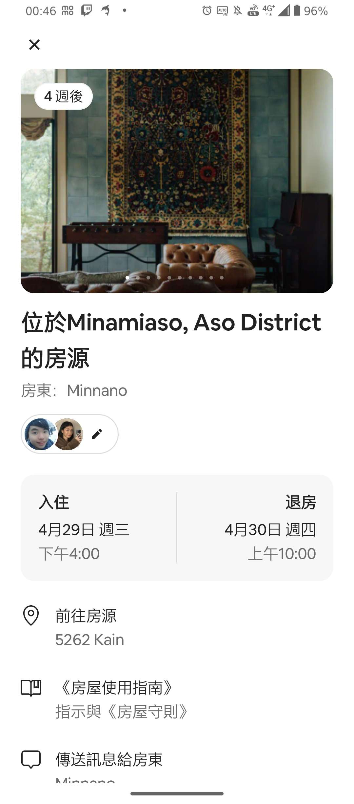
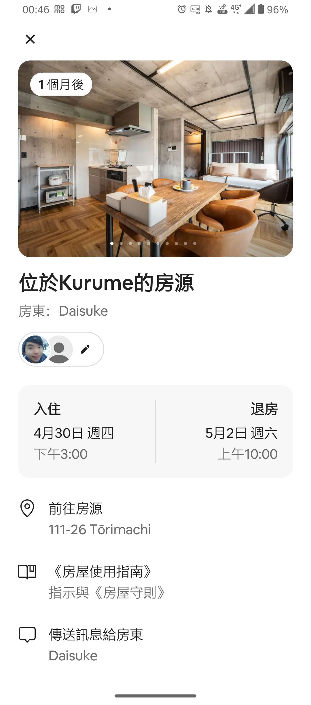
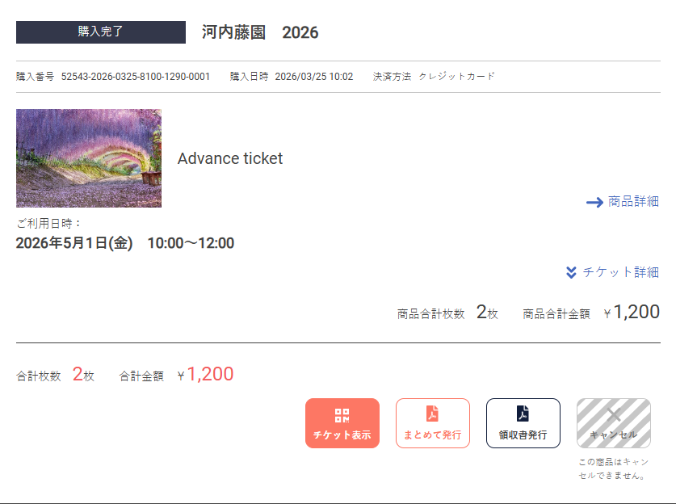
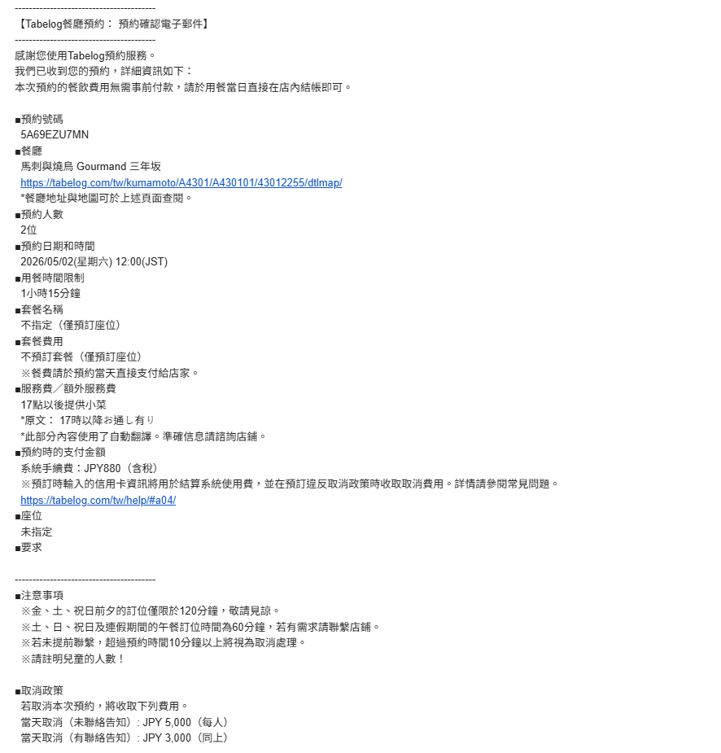
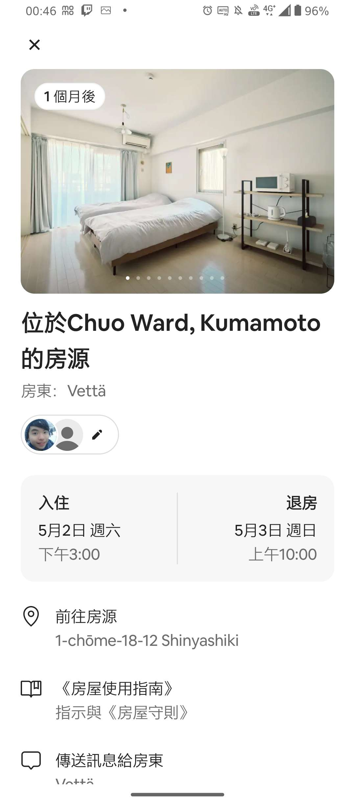
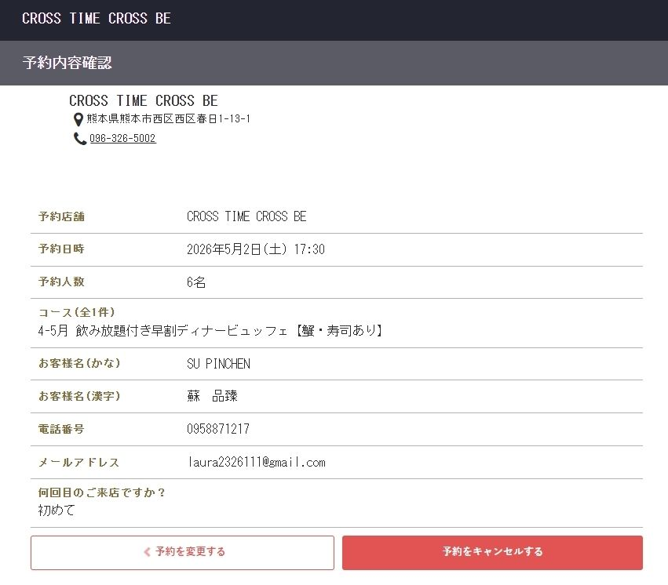

2026.04.29 - 05.03熊本 • 阿蘇 • 八女 • 福岡
請點擊螢幕開啟介面
💡 點擊行程項目可查看詳細內容與連結
💡 點擊圖片即可全螢幕雙指放大查看
點擊按鈕將直接開啟 Google Maps App 搜尋附近地標。
準備辦理入境與租車手續，預計 12:00 出發。👉 您可在此加入取車地點截圖。
排隊名店，中途可外帶 Minata 炸雞。
商店 18:00 關門，請注意時間。
散步行程：阿蘇神社商店街、郵局、超市。⚠️ 神社/郵局17:00關。晚上有提燈祭。
20:00 close，人氣排隊拉麵。
順利完成第一天自駕，好好泡個溫泉休息吧！👉 點擊圖片可全螢幕放大：。

準備開始南阿蘇的秘境巡禮！
祈求財運與好運的白蛇神社。車程約 10 分鐘。
水質清澈見底的秘境，時間若來不及可機動跳過。
彷彿進入異世界的絕美階梯神道，非常適合拍照打卡。
別忘了在此收集精美的御朱印！
預約時間：12:30特色：阿蘇知名的赤牛燒肉店。👉 您可在此加入訂位截圖。
車程約 1hr 40min。一望無際的絕美茶園，來杯抹茶冰和拿鐵享受午後時光。
車程約 10 分鐘。橫町町家交流館 (19:00關) / 許斐本家 (18:00關)。
預約時間：18:00位置：八女白壁老街步行 5 分鐘。👉 您可在此加入訂位截圖。
辛苦駕駛了，早點休息準備明日的行程。定位有點不精準，建議再看一下Airbnb👉 點擊圖片可全螢幕放大：

路上記得去超商買個早餐墊墊胃。
車程約 1.5hr。💡 注意：必需在 12:00 前完成入園。點擊圖片可全螢幕放大：

預約時間：13:00👉 您可在此加入訂位截圖。
吃飽散步過去約 5 分鐘，福岡的總鎮守。
位於博多運河城內，扭蛋迷的天堂！
主要區域：天神 PARCO、天神地下街。
預約時間：19:00👉 您可在此加入訂位截圖。
🛒 購物清單提醒：1. 藥妝 (貓表飛鳴、canmake)2. 衣服 (Niko and)3. 電器 (平板夾)
提早離開久留米，開車南下前往熊本市區。
預約時間：12:00人數：2人必點：生馬肉拼盤、阿蘇赤牛排。👉 點擊圖片可全螢幕放大：

參觀熊本城，並在城彩苑吃海膽餅、買伴手禮。
車程約 10 分鐘。據說這裡的御朱印非常美，還有可愛的貓貓 🐱！
熊本市區飯店，放個行李稍作休息。👉 點擊圖片可全螢幕放大：

預約時間：17:30，家庭聚餐👉 點擊圖片可全螢幕放大：

享受在熊本的最後一個夜晚。
確認所有行李都有帶上，準備去還車。
車程約 30 分鐘。於機場周邊的營業所完成還車手續。
在機場買個早餐，帶著滿滿回憶平安回家！